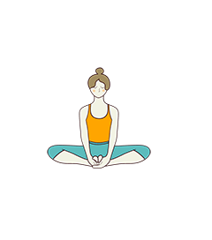
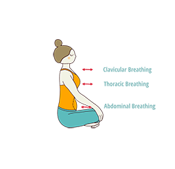
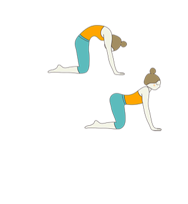
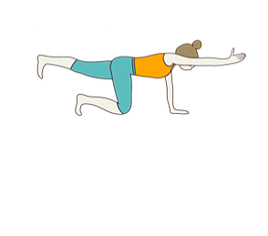
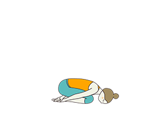
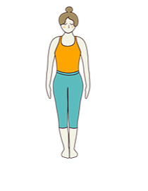
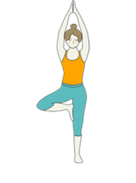
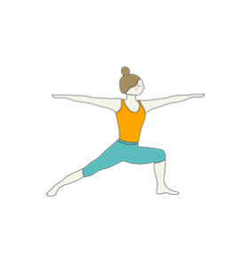

Breast Cancer

Tips
- Keep Weight in Check
- Be Physically Active
- Eat Your Fruits & Vegetables – and Limit Alcohol (Zero is Best)
- Avoid Birth Control Pills, Particularly After Age 35 or If You Smoke
- Tamoxifen and Raloxifene for Women at High Risk
- Avoid Hormone Therapy for Menopause
Yogasanas

Bound Angle Pose (Baddha Konasana)
-
FIRST SEQUENCE This sequence are for those who have been into
yoga earlier, and have crossed the treatment stages with Breast
Cancer, but want to keep their body muscles strong and flexible.
Here the poses will help them get back to life with confidence
and strength.
-
Come to sit at the centre of the mat in Baddha Konasana, where
the soles of the feet are placed touching at the toes and the
heels.
-
Taking a few breaths here, slowly connect the movement of the
body with the breathing. Calm your thoughts, your inner stress,
your limbs and your facial muscles.
-
Holding the feet in your hands, exhale and push the thighs
downwards moving them closer to the floor.
-
Seated here in Bound Angle Pose, the hips open, while flexing
the thighs and the extension of the spine encourages the flow of
prana upwards and downwards.
-
For a more dynamic way, flap the thighs fast in Butterfly
movement to encourage deeper opening of the hips and the lower
back.
-
Stay here for almost 12 breaths. Understand the body while
flapping and stop when not feeling good.
-
Placing a cushion below the hips for better support will bring
less strain on the spine and the flow of prana would be smooth
and you could sit longer too.

Diaphragmatic Breathing
-
Release from Baddha Konasana, hoping the hips and the thighs are
ready for the next poses.
-
Cross the legs in Simple pose or Sukhasana. Bring the Right Foot
in first and then the Left Foot over the right to be seated
crossed leg.
-
Placing the left hand on the belly, close to the navel and the
right hand on the chest, palms facing inwards, close your eyes
and sit extending the spine.
-
This kind of breathing called the THREE PART breath, actively
uses the abdomen, the belly, the lower part of the chest and the
lower part of the throat.
-
Inhale and fill air into the belly, slowly moving upwards to the
lower part of the chest and then finally the throat.
-
Exhale and release from the throat first, the chest and finally
the belly.
-
Repeat this process of breathing, keeping the breath slow and
steady, while using the palms of the hands to feel and connect
with the movement of the body.
-
The breathing should be continuous, inhaled and exhaled through
the nose only. Watch for the expansion of the lungs, the chest,
the abdomen.
-
This kind of breathing, Dirga Pranayama is nourishing, calming
and relaxing. It helps one to connect with the inner self using
the hands to also feel the movement of the body along with the
breath.

Cat Cow Pose (Bitilasana Marjaryasana)
-
From the Three Part Breathing, relax and come to sit on your
knees.
-
Exhale and place the palms on the floor in front of you, making
sure they are in line with your knee and the thighs.
-
Keeping a comfortable distance between the knees and the palms,
make sure the alignment of the body is perfect while on all
fours.
-
Knees under the hips, palms under the shoulders, inhale and
bring the chest outwards, belly towards the ground, shoulders
backwards, gaze up, curve the back inwards.
-
On the exhale, round the spine, tuck the tailbone, pull the
belly in towards the spine, round the shoulders, bring the chin
to lock and look down.
-
Repeat this breathing while moving the spine at your own pace,
focusing on the breath.
-
Cat Cow Pose brings awareness of the spine, opens the chest and
allows the practitioner to feel confident and yet grounded and
soft.
-
This pose can be done seated on the floor or on the chair if the
arms cannot take the weight of the body.
-
Do this for about 8 rounds of both inhaling and exhaling and go
at your own pace.

Balancing Table Pose (Dandayamana Bharmanasana)
-
To move from Cat Cow pose and to go a till deeper with the
stretch and the strength, practice Balancing Table Pose.
-
From Cat Cow pose, release to come to neutral. Inhale and extend
the right arm out, while slowly adjusting to extend the left leg
out behind you.
-
Stay extending the alternative arm and leg in Balancing Table
Pose or Dandayamana Bharmanasana. Be here for about 2 breaths
and release.
-
Come to the first position, and relax taking few breaths, and if
required you could rest in Vajrasana too.
-
Come back to Cow pose, inhale and extend the left arm in front
of you and slowly bring the right leg out extending behind you.
-
This pose helps to improve the core muscles, improves balance
while strengthening the shoulders and the chest.
-
Go steady while understanding the body and it limitations. The
shoulders and the arms need to regain strength slowly, with all
the wear and tear of the muscles that were exhausted with the
treatment of Breast Cancer.
-
Repeat this pose couple of times more taking complete rest in
between in Vajrasana. Using the wall for support should be
AVOIDED here, as one does not want to fight against gravity.
Being natural with the body along with gravity is better in this
situation.

Child Pose (Balasana)
-
From all four of Cow Pose, release and come to sit in Vajrasana.
-
Exhale bring the knees together and sitting on the heels, exhale
to go forward flexing at the hips and bring the face close to
the floor, in Child Pose or Balasana.
-
Placing the hands on the heels from behind remain to relax
completely here. Placing a cushion below your face and also on
your thighs will reduce the discomfort.
-
Breath to release and relax the shoulders, arms, neck and spine.
If resting the chest at the thighs brings discomfort even with
the use of cushion then one can go into PRASARIT BALASANA .

Mountain Pose (Tadasana)
-
Releasing from Balasana or Prasarita Balasana, come to stand on
your feet in Tadasana.
-
Exhale completely bringing the feet together, while the chest
and the shoulders are aligned keeping the spine extended
upwards.
-
One of the elements, as described in Yoga, THE EARTH ELEMENT, is
considered solid and represents the bones, flesh, skin, tissues
and hair in the human anatomy.
-
This element reflects stability and strength even under stress
and is connected to the Root Chakra.
-
Hence these standing poses, starting from Tadasana, helps to
align the body in alignment with the earth element within us.
Taking care to make the ROOT strong giving an overall balance
and control

Tree Pose (Vrksasana)
-
From Tadasana, inhale and using your hand place the right foot
soles touching on the inner side of the left thigh, while
bending the right knee. Inhale again and stand straight and
raise the arms above your head to go into Vrksasana or Tree
Pose.
-
If balancing the body with the arms raised is causing
discomfort, then placing the palm close to your chest in front
of you is a good option.
-
Try to remain in balance in Tree pose for about 2 breaths, and
exhale to release.
-
Inhale and try with the other leg balancing on the right leg.
Release when in discomfort.
-
Vrksasana or Tree Pose, uses the core to hold in balance while
also strengthening the legs at the ankle, knee and the hips.
-
A great way to build self confidence and acceptance with the
practice of this pose. Firm placing of the foot, encourages self
control of one's body with awareness.
-
Good to keep the joints active and lubricating as for some
people the joints and the bones can become weak as part of the
side effects of treatments for Breast Cancer

Warrior Pose II (Virabhadrasana II)
-
Releasing from Tree pose, stand with feet together and relax the
breath.
-
Inhale and place the left foot behind you, increasing the
distance more than the hip.
-
Placing the left foot inwards to 45 degrees, let the right foot
remain facing front at 90 degrees.
-
Making sure the distance between the feet are comfortable,
exhale and bend the right knee making sure it does not go beyond
the right ankle.
-
Inhale bending more and as you exhale stretch the arms out at
shoulder height to Virabhadrasana ii or Warrior II.
-
Extend the arms out till you are comfortable and feel the
stretch at the shoulders, chest, hips and the legs. Release and
turn back completely, now placing the left foot at 90 degrees
and the right foot inwards at 45 degrees to practice this pose
with the other leg.
-
Strength, endurance, stability, focus and confidence is
encouraged with the practice of this pose.
-
Use the body's comfort while practicing this pose and let go
when in discomfort. This pose can also be done seated on a chair
for better support. Encourage good and positive thoughts at the
time of holding this pose